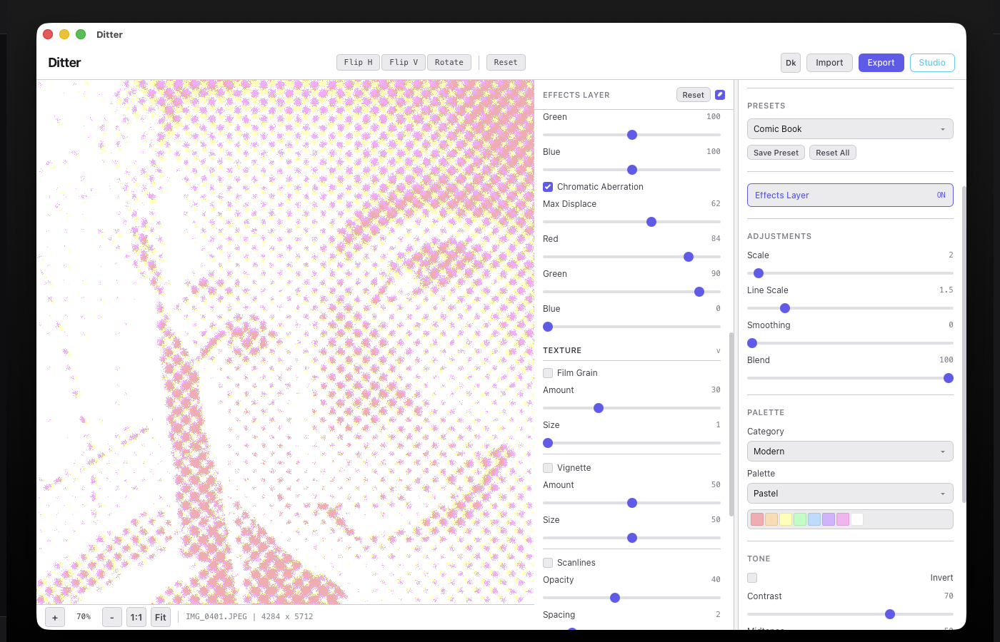
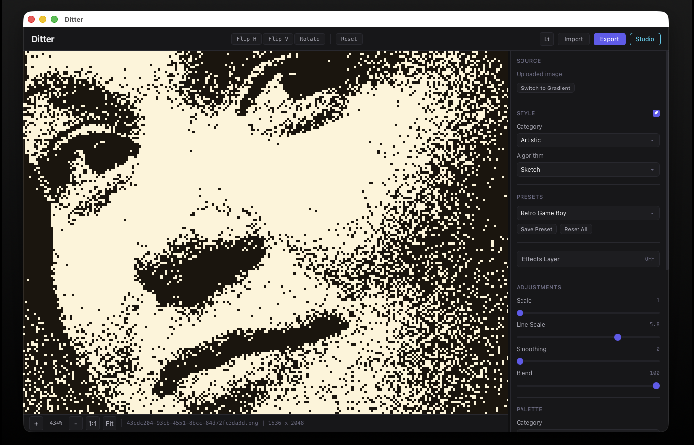
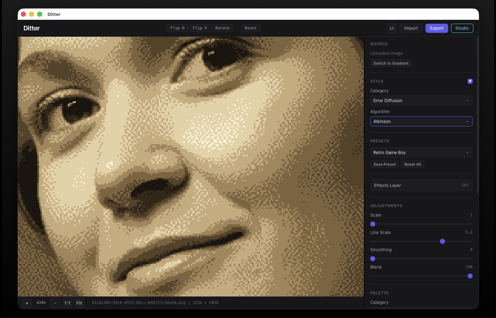

Gallery
See it in action
A selection of dithering styles applied to different images, all processed in real-time.

Dot Halftone — Classic newspaper printing effect, GPU-accelerated

Retro Game Boy — Bayer 4x4 ordered dithering with the Game Boy palette

Blue Noise — Cyberpunk palette with stochastic blue noise dithering

Crosshatch — GPU pattern dithering simulating hand-drawn hatching

Sketch — Pencil stroke simulation with Sobel edge + Perlin noise
Pixel Sort — Glitch art technique sorting pixel runs by luminance

Atkinson + Sepia — Mac Classic-style diffusion with sepia tones

Creative — Experimental generative dithering techniques

Otsu Threshold — Automatic optimal threshold via histogram analysis